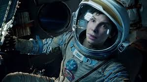

Sobre o Site
Este site foi criado para compartilhar alguns dos meus filmes favoritos. Aqui você encontrrá uma seleção variada de gêneros, incluindo ação, drama e ficção científica.
Lista de Filmes
- Homem-Aranha
- Interestelar
- O Senhor dos Anéis
- Vingadores:Ultimato
Tabela de Informações
| Filme | Ano | Gênero | Nota |
|---|---|---|---|
| Homem-Aranha | 2001 | Ação | 9.7 |
| Interestelar | 2014 | Ficção Científica | 9.0 |
| Matrix | 1999 | Ação | 9.5 |
| Senhor dos Anéis | 1999 | Ação | 9.0 |
| Vingadores:Ultimato | 2019 | Ação | 8.5 |
Imagem

Link externo
Visite o Site IMDb para mais informações sobre filmes.